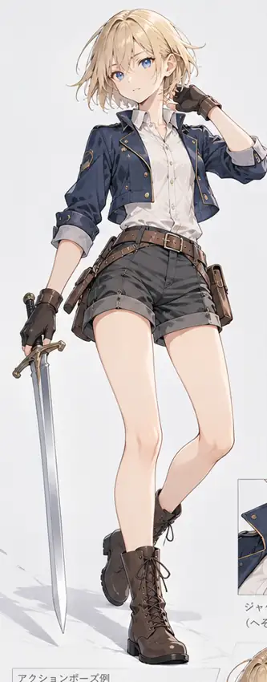
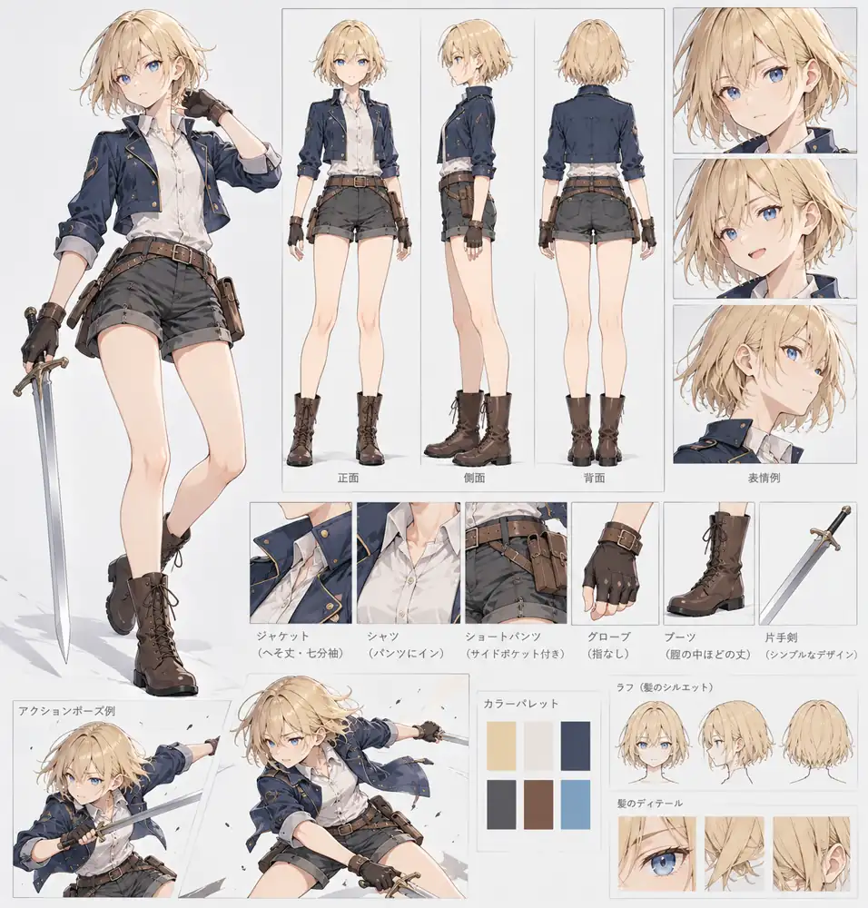
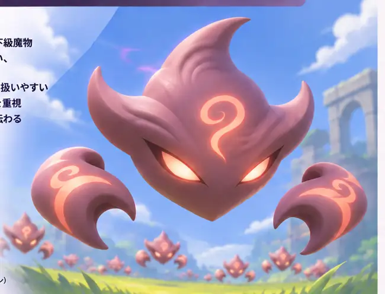
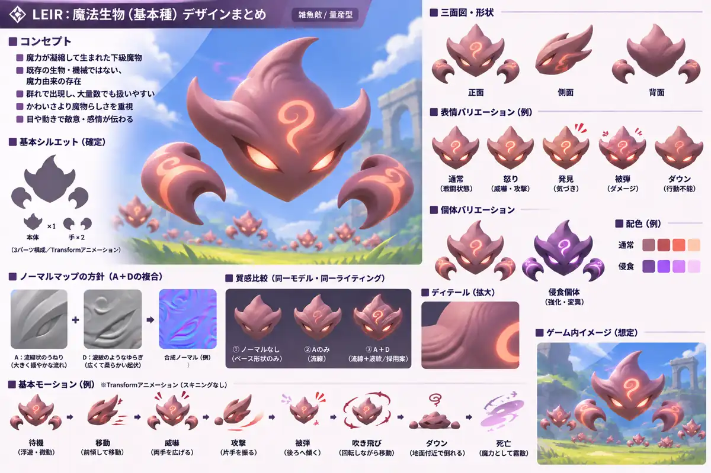

キャラクター
リアと基本雑魚の立ち絵・キャラクターシート。参考画像と確定仕様を分けて管理する。
リア / Leir


女性寄りで中性的な若い冒険者。俊敏な片手剣アクションを使う。
- 髪・目
- 金髪ショートボブ・青い瞳
- 服装
- ネイビーの短丈ジャケット、白シャツ、ダークグレーの短パン、茶色い編み上げブーツ
- 武器
- 片手剣
- 雰囲気
- 柔らかなアニメ調3D。装飾や揺れ物は控えめ
3D生成用の武器なしTポーズとは用途を分ける。
キャラクターシート


雑魚敵：魔法生物


魔力が凝縮して生まれた意思ある下級魔物。大群で出現する。
- 構造
- 本体1＋浮遊する爪2。口・足はなし
- 造形
- 鋭い外形、滑らかな内部曲面。岩肌・装甲の稜線を避ける
- 通常個体
- 赤みのある灰色、朱色紋様。目・紋様だけ局所発光
- 侵食個体
- 同じモデルの紫系リカラー＋局所発光
- 質感
- 不透明の魔力外皮。流線＋波紋のNormal Mapを試す。リムライトなし
- アニメ
- 本体と爪のTransformによる簡易モーション
敵AI・被弾・衝突は 敵・制作順、正本のDesign/Enemies.mdを参照。
デザインシート

